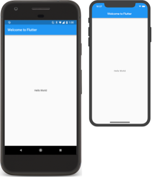
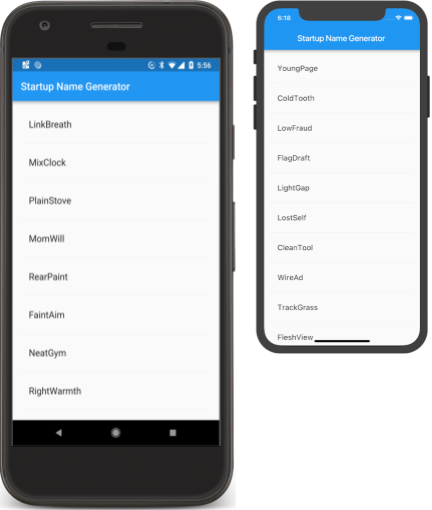
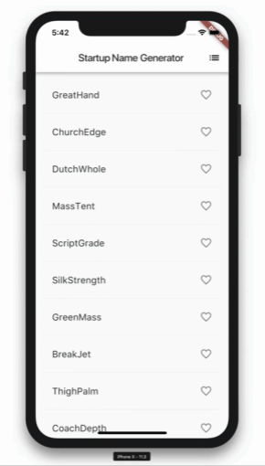

Flutter is Google's UI toolkit for building beautiful, natively compiled applications for mobile, web, and desktop from a single codebase. Flutter works with existing code, is used by developers and organizations around the world, and is free and open source.
In this codelab, you'll create a simple mobile Flutter app. If you're familiar with object-oriented code and basic programming concepts—such as variables, loops, and conditionals—then you can complete the codelab. You don't need previous experience with Dart, mobile, or web programming.
What you'll learn in part 1
- How to write a Flutter app that looks natural on iOS, Android, and the web
- Basic structure of a Flutter app
- Finding and using packages to extend functionality
- Using hot reload for a quicker development cycle
- How to implement a stateful widget
- How to create an infinite, lazily loaded list
In part 2 of this codelab, you'll add interactivity, modify the app's theme, and add the ability to navigate to a new page (called a route in Flutter).
What you'll build in part 1
You'll implement a simple app that generates proposed names for a startup company. The user can select and unselect names, saving the best ones. The code lazily generates 10 names at a time. As the user scrolls, more names are generated. There is no limit to how far a user can scroll.
The following animated GIF shows how the app works at the completion of part:
You need two pieces of software to complete this lab—the Flutter SDK and an editor. (The codelab assumes that you're using Android Studio, but you can use your preferred editor.)
You can run the codelab by using any of the following devices:
- A physical Android or iOS device connected to your computer and set to developer mode
- The iOS simulator (requires installing Xcode tools)
- The Android Emulator (requires setup in Android Studio)
- A browser (Chrome is required for debugging)
If you want to compile your app to run on the web, you must enable this feature (which is currently in beta). To enable web support, use the following instructions:
$ flutter channel beta $ flutter upgrade $ flutter config --enable-web
You need only run the config command once. After enabling web support, every Flutter app you create also compiles for the web. In your IDE under the devices pulldown, or at the command line using flutter devices, you should now see Chrome and Web server listed. The Chrome device automatically starts Chrome. The Web server starts a server that hosts the app so that you can load it from any browser. Use the Chrome device during development so that you can use DevTools, and the web server when you want to test on other browsers. For more information, see Building a web application with Flutter and Write your first Flutter app on the web.
Create a simple, templated Flutter app by using the instructions in Create the app. Enter startup_namer (instead of flutter_app) as the project name. You'll modify the starter app to create the finished app.
Tip: If you don't see the ability to start a new Flutter project as an option in your IDE, then make sure that you have the plugins installed for Flutter and Dart.
You'll mostly edit lib/main.dart, where the Dart code lives.
Replace the contents of lib/main.dart. Delete all of the code from lib/main.dart and replace it with the following code, which displays "Hello World" in the center of the screen.
import 'package:flutter/material.dart';
void main() => runApp(MyApp());
class MyApp extends StatelessWidget {
@override
Widget build(BuildContext context) {
return MaterialApp(
title: 'Welcome to Flutter',
home: Scaffold(
appBar: AppBar(
title: const Text('Welcome to Flutter'),
),
body: const Center(
child: const Text('Hello World'),
),
),
);
}
}
Tip: When pasting code into your app, indentation can become skewed. You can fix it with the following Flutter tools:
- Android Studio/IntelliJ IDEA: Right-click the Dart code and select Reformat Code with dartfmt.
- VS code: Right-click and select Format Document.
- Terminal: Run
flutter format.
Run the app. You should see either Android, iOS, or web output, depending on your device.
Android iOS | |
 |
Tip: The first time that you run on a physical device, it can take a while to load. Afterward, you can use hot reload for quick updates. In supported IDEs, Save also performs a hot reload if the app is running. When running an app directly from the console using flutter run, enter r to perform hot reload.
 Observations
Observations
- This example creates a Material app. Material is a visual-design language that's standard on mobile and the web. Flutter offers a rich set of Material widgets.
- The main method uses arrow (
=>) notation. Use arrow notation for one-line functions or methods. - The app extends
StatelessWidget, which makes the app itself a widget. In Flutter, almost everything is a widget, including alignment, padding, and layout. - The
Scaffoldwidget, from the Material library, provides a default app bar, a title, and a body property that holds the widget tree for the home screen. The widget subtree can be quite complex. - A widget's main job is to provide a
buildmethod that describes how to display the widget in terms of other, lower-level widgets. - The body for this example consists of a
Centerwidget containing aTextchild widget. TheCenterwidget aligns its widget subtree to the center of the screen.
In this step, you'll start using an open-source package named english_words, which contains a few thousand of the most-used English words, plus some utility functions.
You can find the english_words package, as well as many other open-source packages, at pub.dev.
The pubspec file manages the assets for a Flutter app. In pubspec.yaml, append english_words: ^3.1.5 (english_words 3.1.5 or higher) to the dependencies list:
dependencies:
flutter:
sdk: flutter
cupertino_icons: ^0.1.2
english_words: ^3.1.5 # add this line
While viewing the pubspec in Android Studio's editor view, click Packages get. This pulls the package into your project. You should see the following in the console:
flutter packages get
Running "flutter packages get" in startup_namer...
Process finished with exit code 0
Performing Pub get also auto-generates the pubspec.lock file with a list of all packages pulled into the project and their version numbers.
In lib/main.dart, import the new package:
import 'package:flutter/material.dart'; import 'package:english_words/english_words.dart'; // Add this line.
As you type, Android Studio gives you suggestions for libraries to import. It then renders the import string in gray, letting you know that the imported library is unused (so far).
Next, you'll use the english_words package to generate the text instead of using "Hello World".
Make the following changes:
import 'package:flutter/material.dart';
import 'package:english_words/english_words.dart';
void main() => runApp(MyApp());
class MyApp extends StatelessWidget {
@override
Widget build(BuildContext context) {
final wordPair = WordPair.random(); // Add this line.
return MaterialApp(
title: 'Welcome to Flutter',
home: Scaffold(
appBar: AppBar(
title: Text('Welcome to Flutter'),
),
body: Center(
//child: Text('Hello World'), // Replace this text...
child: Text(wordPair.asPascalCase), // With this text.
),
),
);
}
}
Tip: Pascal case (also known as upper camel case) means that each word in the string, including the first one, begins with an uppercase letter. So, uppercamelcase becomes UpperCamelCase.
If the app is running, hot reload  to update the running app. (From the command line, you can enter
to update the running app. (From the command line, you can enter r to hot reload.) Each time you click hot reload or save the project, you should see a different word pair, chosen at random, in the running app. That's because the word pairing is generated inside the build method, which runs each time the MaterialApp requires rendering, or when toggling the Platform in the Flutter Inspector.
Android iOS |
Problems?
If your app isn't running correctly, look for typos. If needed, use the code at the following links to get back on track.
Stateless widgets are immutable, meaning that their properties can't change—all values are final.
Stateful widgets maintain state that might change during the lifetime of the widget. Implementing a stateful widget requires at least two classes: 1) a StatefulWidget that creates an instance of a State class. The StatefulWidget object is, itself, immutable and can be thrown away and regenerated, but the State object persists over the lifetime of the widget.
In this step, you'll add a stateful widget, RandomWords, which creates its State class, _RandomWordsState. You'll then use RandomWords as a child inside the existing MyApp stateless widget.
Create boilerplate code for a stateful widget.
It can go anywhere in the file outside of MyApp, but the solution places it at the bottom of the file. In lib/main.dart, position your cursor after all of the code, enter Return a couple times to start on a fresh line. In your IDE, start typing stful. The editor asks if you want to create a Stateful widget. Press Return to accept. The boilerplate code for two classes appears, and the cursor is positioned for you to enter the name of your stateless widget.
Enter RandomWords as the name of your widget.
As you can see in the code below, the RandomWords widget does little else beside creating its State class.
Once you've entered RandomWords as the name of the stateful widget, the IDE automatically updates the accompanying State class, naming it _RandomWordState. By default, the name of the State class is prefixed with an underscore. Prefixing an identifier with an underscore enforces privacy in the Dart language and is a recommended best practice for State objects.
The IDE also automatically updates the state class to extend State, indicating that you're using a generic State class specialized for use with RandomWords. Most of the app's logic resides here—it maintains the state for the RandomWords widget. This class saves the list of generated word pairs, which grows infinitely as the user scrolls and, in part 2 of this lab, favorites word pairs as the user adds or removes them from the list by toggling the heart icon.
Both classes now look as follows:
class RandomWords extends StatefulWidget {
@override
_RandomWordsState createState() => _RandomWordsState();
}
class _RandomWordsState extends State<RandomWords> {
@override
Widget build(BuildContext context) {
return Container();
}
}
Update the build() method in _RandomWordsState.
Replace return Container(); with the following two lines:
class _RandomWordsState extends State<RandomWords> {
@override
Widget build(BuildContext context) {
final wordPair = WordPair.random(); // NEW
return Text(wordPair.asPascalCase); // NEW
}
}
Remove the word-generation code from MyApp by making the following changes:
class MyApp extends StatelessWidget {
@override
Widget build(BuildContext context) {
final wordPair = WordPair.random(); // DELETE
return MaterialApp(
title: 'Welcome to Flutter',
home: Scaffold(
appBar: AppBar(
title: Text('Welcome to Flutter'),
),
body: Center(
//child: Text(wordPair.asPascalCase), // REPLACE with...
child: RandomWords(), // ...this line
),
),
);
}
}
Hot reload the app. The app should behave as before, displaying a word pairing each time you hot reload or save the app.
Tip: If you see a warning on a hot reload that you might need to restart the app, you should consider restarting the app. It might be a false positive, but restarting ensures that your changes are reflected in the app's UI.
In this step, you'll expand _RandomWordsState to generate and display a list of word pairings. As the user scrolls, the list (displayed in a ListView widget) grows infinitely. The builder factory constructor in ListView allows you to lazily build a list view on demand.
Add some state variables to the _RandomWordState class.
Add a _suggestions list for saving suggested word pairings. Also, add a _biggerFont variable for making the font size larger.
class _RandomWordsState extends State<RandomWords> {
final List<WordPair> _suggestions = <WordPair>[]; // NEW
final TextStyle _biggerFont = const TextStyle(fontSize: 18); // NEW
...
}
Next, you'll add a _buildSuggestions() function to the _RandomWordsState class. This method builds the ListView that displays the suggested word pairing.
The ListView class provides a builder property, itemBuilder, that's a factory builder and callback function specified as an anonymous function. Two parameters are passed to the function—the BuildContext and the row iterator, i. The iterator begins at 0 and increments each time the function is called, once for every suggested word pairing. This model allows the suggestion list to continue growing as the user scrolls.
Add the entire _buildSuggestions function.
In the _RandomWordsState class, add the following function, deleting the comments, if you prefer:
Widget _buildSuggestions() {
return ListView.builder(
padding: const EdgeInsets.all(16),
// The itemBuilder callback is called once per suggested
// word pairing, and places each suggestion into a ListTile
// row. For even rows, the function adds a ListTile row for
// the word pairing. For odd rows, the function adds a
// Divider widget to visually separate the entries. Note that
// the divider may be difficult to see on smaller devices.
itemBuilder: (BuildContext _context, int i) {
// Add a one-pixel-high divider widget before each row
// in the ListView.
if (i.isOdd) {
return Divider();
}
// The syntax "i ~/ 2" divides i by 2 and returns an
// integer result.
// For example: 1, 2, 3, 4, 5 becomes 0, 1, 1, 2, 2.
// This calculates the actual number of word pairings
// in the ListView,minus the divider widgets.
final int index = i ~/ 2;
// If you've reached the end of the available word
// pairings...
if (index >= _suggestions.length) {
// ...then generate 10 more and add them to the
// suggestions list.
_suggestions.addAll(generateWordPairs().take(10));
}
return _buildRow(_suggestions[index]);
}
);
}
The _buildSuggestions function calls _buildRow once per word pair. That function displays each new pair in a ListTile, which allows you to make the rows more attractive in part 2.
Add a _buildRow function to _RandomWordsState:
Widget _buildRow(WordPair pair) {
return ListTile(
title: Text(
pair.asPascalCase,
style: _biggerFont,
),
);
}
Update the build method for _RandomWordsState.
Change it to use _buildSuggestions(), rather than directly calling the word-generation library. ( Scaffold implements the basic Material Design visual layout.)
@override
Widget build(BuildContext context) {
//final wordPair = WordPair.random(); // Delete these...
//return Text(wordPair.asPascalCase); // ... two lines.
return Scaffold ( // Add from here...
appBar: AppBar(
title: Text('Startup Name Generator'),
),
body: _buildSuggestions(),
); // ... to here.
}
Update the build method for MyApp, changing the title, removing the AppBar, and changing the home property to a RandomWords widget.
@override
Widget build(BuildContext context) {
return MaterialApp(
title: 'Startup Name Generator',
home: RandomWords(),
);
}
Restart the app. You should see a list of word pairings no matter how far you scroll.
Android | iOS |

Problems?
If your app isn't running correctly, you can use the code at the following link to get back on track.
Congratulations!
You have completed part 1 of this codelab! If you'd like to extend this app, proceed to part 2, where you will modify the app as follows:
- Add interactivity.
- Add the ability to navigate to a new route.
- Modify the theme color.
When part 2 is completed, the app will look like this:

Other next steps
Learn more about the Flutter SDK with the following resources:
- Layouts in Flutter
- Add interactivity tutorial
- Introduction to widgets
- Flutter for Android developers
- Flutter for React Native developers
- Flutter for web developers
- Flutter YouTube channel
Other resources include the following:
- Build Native Mobile Apps with Flutter
- From Java to Dart codelab
- Flutter cookbook
- Bootstrap into Dart: learn more about the language